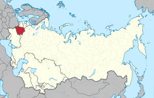

ENGLISHРУССКИЙ
ENGLISHРУССКИЙ
ENGLISHРУССКИЙ
ENGLISHРУССКИЙ
ENGLISHРУССКИЙ
ENGLISHРУССКИЙ
БССР
Белору́сская Сове́тская Социалисти́ческая Респу́блика (БССР, Белорусская ССР; белор. Беларуская Савецкая Сацыялістычная Рэспубліка) — союзная республика в составе СССР с 1922 по 1991 год.
Впервые провозглашена 1 января 1919 года под названием Социалистическая Советская Республика Белоруссия, которая 31 января 1919 года вышла из состава РСФСР, а 27 февраля объединилась с Литовской Советской Республикой в Литовско-Белорусскую Советскую Социалистическую Республику — Литбел.
Литбел прекратила своё существование в результате польской оккупации в ходе советско-польской войны. 12 июля 1920 года в результате Московского договора, заключённого между РСФСР и Литвой, закрепил прекращение существования Литбела. 31 июля 1920 года в Минске была восстановлена Социалистическая Советская Республика Белоруссия (Белорусская Социалистическая Советская Республика), в дальнейшем изменившая название на Белорусская Социалистическая Советская Республика (с принятием Конституции СССР 1936 года второе и третье слово поменялись местами). БССР в числе 4 советских республик 30 декабря 1922 года подписала Договор об образовании СССР.
Наряду с УССР была суверенным сооснователем и членом ООН с 1945 года.
27 июля 1990 года была принята Декларация о государственном суверенитете БССР. 19 сентября 1991 года БССР была переименована в Республику Беларусь, а 8 декабря 1991 года совместно с представителями РСФСР и Украиной руководство республики подписало Беловежское соглашение о создании СНГ.
Карта БССР с 1922 по 1991 года
[ОБРАТНО НА ГЛАВНУЮ] [ОБРАТНО К РЕСПУБЛИКАМ]